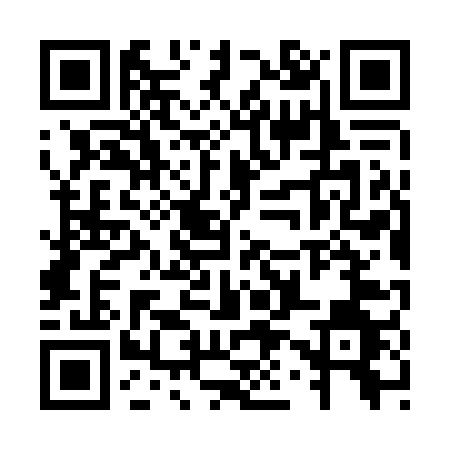

Digital Well-being & Awareness
An interactive space to understand how social media shapes comparison — and what you can do about it.

Point your camera at the code and the whole experience opens on your phone: the interactive simulator, the research, the reading lounge and where to find support. Explore at your own pace, and stop whenever you like.
health-campaing.vercel.app